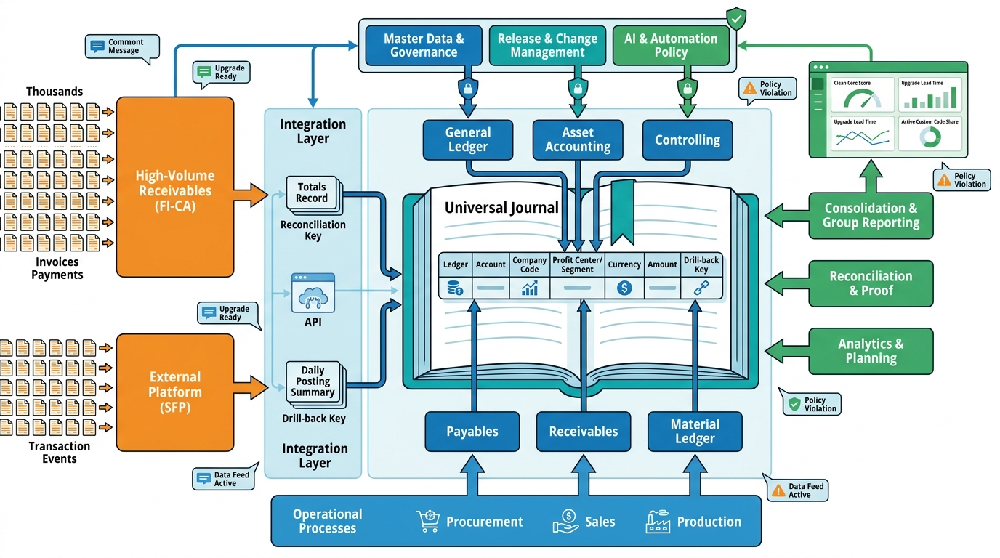

Part II — PLATFORMS: The Core Enterprise Finance Platforms
SAP S/4HANA: The Enterprise Finance Core

Image generated by Google Gemini (gemini-3-pro-image-preview)
Part II — PLATFORMS: The Core Enterprise Finance Platforms

Image generated by Google Gemini (gemini-3-pro-image-preview)